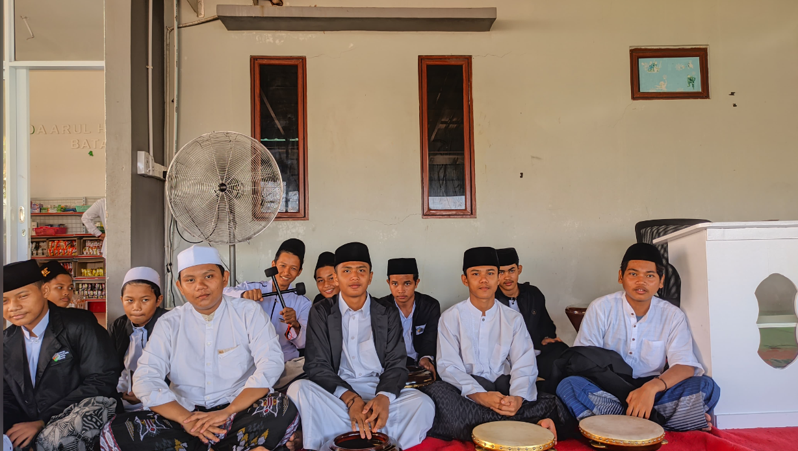
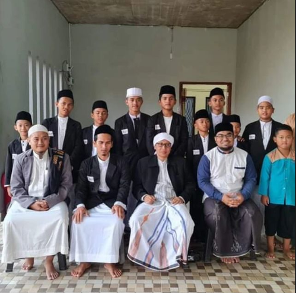
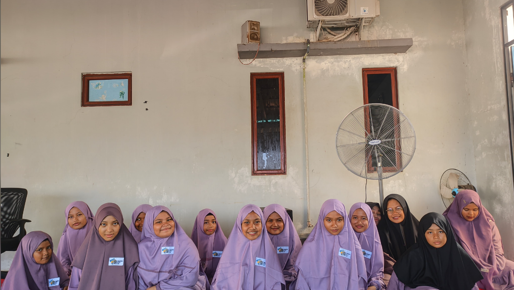
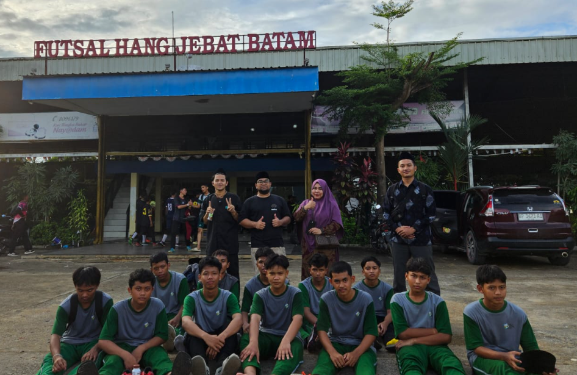
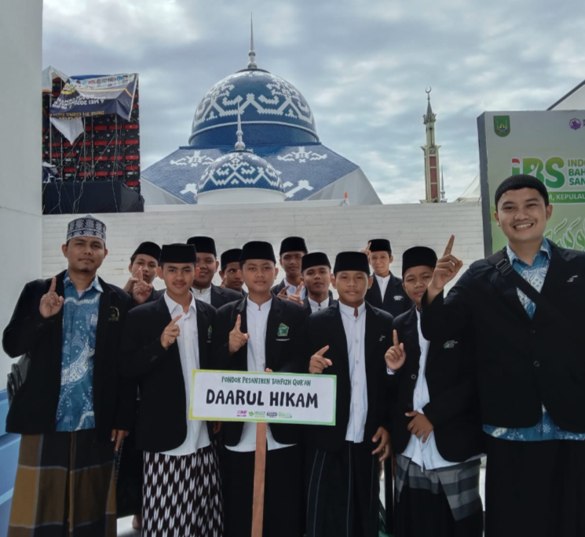

Video Profile Daarulhikam
Kenali Daarulhikam lebih dekat.
Berbasis Al-Qur'an dan Sunnah.
Siap kuliah & berprestasi.
Pembinaan karakter & adab.

Daarulhikam Boarding School adalah lembaga pendidikan Islam yang memadukan pembinaan akidah, akhlak, dan akademik dalam lingkungan pesantren modern.
Dengan sistem boarding, santri dibina secara intensif agar siap melanjutkan studi dan menjadi generasi unggul.
SelengkapnyaVisi: Mencetak kader penghafal Al-Qur'an yang beraqidah Ahlus Sunnah dan berakhlak karimah.

Santri Aktif
Musyrif & Musyrifah
Pengajar
Alumni
Pilih kategori untuk melihat foto lingkungan dan fasilitas Daarulhikam.
Melihat perjalanan Daarulhikam dari tahun ke tahun

Tahun 2020
Tahun 2022
Tahun 2023
Tahun 2025Klik pertanyaan untuk melihat contoh jadwal & jam pelajaran
Pelajaran meliputi Tahfidz Al-Qur’an, kitab kuning, Aqidah, Fiqih, Bahasa Arab, Matematika, IPA, IPS, dan Bahasa Inggris.
Jadwal disusun seimbang antara ibadah, belajar, olahraga dan istirahat yang cukup agar santri tetap nyaman dan produktif.
Kepercayaan orang tua adalah prioritas kami
"Alhamdulillah anak saya lebih disiplin, mandiri, dan hafalan Qur'annya meningkat pesat."
"Lingkungan pesantren sangat islami, pengajar dan musyrifnya sangat perhatian."
"Fasilitas lengkap dan pembinaan karakter anak sangat terasa."
Saksikan video profil, kegiatan, dan informasi terbaru Daarulhikam langsung dari halaman website.
Kenali Daarulhikam lebih dekat.

Drama anak durhaka yang di tampilkan para santri

Rihlah para santri di Hotel Harris